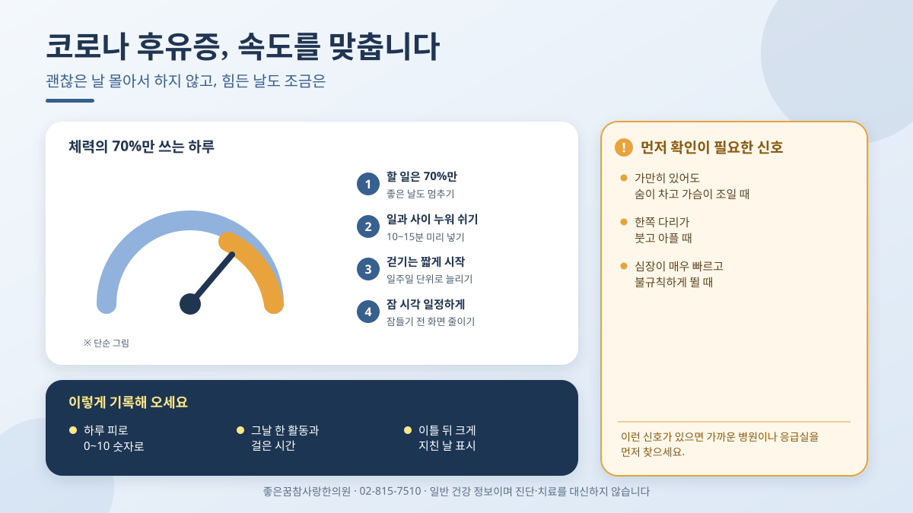

이종호 한의사 감수좋은꿈참사랑한의원 대표원장 (한의사 면허번호 19769)발행 2026-11-26 · 수정 2026-11-26
이 글의 차례
격리가 끝나고 다시 출근한 지 한 달이 지났습니다. 열은 진작 내렸고 검사도 음성인데, 계단 한 층을 오르면 숨이 차고, 오후 세 시만 되면 몸이 바닥으로 꺼지는 것 같습니다. 회의 중에 하려던 말이 갑자기 생각나지 않아 당황한 적도 있습니다. "다 나은 거 맞나요? 예전의 저로 돌아갈 수 있을까요?"
코로나를 앓은 뒤 이런 불편이 몇 주에서 몇 달 이어지는 분들이 있습니다. 흔히 코로나 후유증 또는 롱코비드라고 부릅니다. 앓을 때 증상이 가벼웠던 분에게도 나타날 수 있어서, 본인도 주변도 '이미 나았는데 왜 그러지' 하고 대수롭지 않게 넘기기 쉽습니다.
진료실에서 이 이야기를 듣다 보면 몸의 불편만큼 마음의 답답함이 크다는 것을 느낍니다. 겉으로는 멀쩡해 보이니 쉬겠다고 말하기 어렵고, 예전처럼 일하지 못하는 자신에게 실망하게 됩니다. 저는 먼저 그 불편이 실제로 있는 것이라는 말씀부터 드립니다.
후유증의 모습은 사람마다 다릅니다. 어떤 분은 기침이, 어떤 분은 피로가, 어떤 분은 냄새와 맛의 변화나 잠이 가장 힘들다고 하십니다. 그래서 진료실에서는 '후유증'이라는 하나의 이름보다, 지금 하루를 가장 흔드는 불편이 무엇인지부터 함께 정리합니다.
코로나 후유증은 어떤 모습으로 나타나나요
코로나 후유증으로 말씀하시는 불편은 꽤 넓습니다. 한 가지만 있는 분도 있고, 몇 가지가 함께 있는 분도 있습니다.
- 쉬어도 풀리지 않는 피로, 조금만 움직여도 쉽게 지침
- 마른기침이나 목 칼칼함이 몇 주째 이어짐
- 머리가 멍하고 집중이 잘 안 되며 말이 바로 떠오르지 않음
- 계단이나 언덕에서 예전보다 숨이 참
- 냄새나 맛이 둔해지거나 다르게 느껴짐
- 잠들기 어렵거나 자주 깨고, 가슴이 두근거림
이런 불편은 날마다 오르내림이 있습니다. 괜찮은 날 평소처럼 움직였다가 다음 날이나 이틀 뒤에 크게 지치는 일이 흔합니다. 이 오르내림을 아는 것이 일상을 다시 짜는 데 중요한 출발점이 됩니다.
왜 코로나를 앓고 나서 불편이 오래 남을까요
코로나 후유증이 왜 생기는지는 아직 연구가 이어지고 있습니다. 감염이 지나간 뒤에도 몸 곳곳에 염증 반응이 한동안 남는다는 설명, 자율신경의 균형이 흔들린다는 설명, 앓는 동안 줄어든 활동과 잠의 변화가 겹친다는 설명 등이 함께 이야기됩니다.
한 가지 분명한 것은 원인이 한 갈래만은 아니라는 점입니다. 그래서 '이것만 하면 된다'는 하나의 해법보다, 남은 불편을 하나씩 나눠서 살피고 일상의 속도를 몸에 맞게 조절하는 쪽이 현실적입니다.
앓기 전부터 잠이 부족하고 일이 많았던 분, 앓는 동안에도 충분히 쉬지 못하고 일을 이어 간 분은 회복이 더딘 경우가 많습니다. 몸이 회복에 쓸 힘을 일상에 먼저 써 버렸기 때문입니다.
병원에서 먼저 확인할 것은 무엇인가요
숨이 차거나 가슴이 두근거리는 불편이 남아 있다면, 먼저 내과에서 심장과 폐를 확인해 보시길 권합니다. 흉부 사진, 심전도, 혈액 검사 같은 기본 검사로 다른 원인이 없는지 살피는 것이 순서입니다.
일부 병원에는 코로나 후유증을 따로 보는 클리닉도 있습니다. 냄새와 맛의 변화가 오래간다면 이비인후과에서, 기분이 크게 가라앉거나 잠이 무너졌다면 정신건강의학과에서 상담을 받는 것도 도움이 됩니다.
검사에서 큰 이상이 없다는 말을 들었는데도 불편이 이어지는 분이 많습니다. 그것은 불편이 없다는 뜻이 아니라, 검사로 드러나지 않는 몸의 흐름이 아직 회복 중이라는 뜻에 가깝습니다. 그때부터 일상의 속도와 잠, 식사를 함께 들여다보게 됩니다.
만성피로나 감기 뒤 기침과는 어떻게 다른가요
감기나 독감 뒤에도 몇 주 동안 기침이나 피로가 남을 수 있습니다. 대부분은 시간이 지나며 조금씩 옅어집니다. 코로나 후유증은 이보다 길게 이어지거나, 좋아지다 다시 나빠지는 오르내림이 뚜렷한 경우가 많습니다.
특히 '움직인 뒤에 늦게 오는 피로'가 특징으로 꼽힙니다. 산책을 조금 길게 했거나 장을 보고 온 날은 괜찮다가, 다음 날이나 그다음 날 몸이 크게 가라앉습니다. 이런 모양이 보인다면 활동량을 한꺼번에 늘리지 않도록 더 조심해야 합니다.
머리가 멍한 느낌은 어떻게 다루나요
머리에 안개가 낀 것 같다는 표현을 많이 하십니다. 읽은 문장이 잘 들어오지 않고, 해야 할 일을 자꾸 잊고, 말하려던 단어가 바로 떠오르지 않습니다. 이 불편은 일을 하는 분께 특히 큰 부담이 됩니다.
해야 할 일을 메모로 남기고, 한 번에 한 가지씩 처리하며, 집중이 필요한 일은 컨디션이 가장 좋은 시간대에 배치해 보세요. 30~40분 집중한 뒤에는 5분 정도 눈을 감고 쉬는 것도 좋습니다. 머리를 쉬게 하는 것도 회복의 일부입니다.
잠이 얕으면 다음 날 멍함이 더 심해집니다. 그래서 머리가 멍한 분께는 잠을 함께 여쭙습니다. 잠드는 시각을 일정하게 하고, 잠들기 전 화면 보는 시간을 줄이는 것부터 시작해 보세요.
남은 기침과 숨참은 어떻게 다루나요
코로나 뒤에 남는 기침은 대개 마른기침입니다. 찬 공기를 마시거나 말을 오래 하면 간질간질하다 기침이 터지고, 밤에 누우면 더 잦아지기도 합니다. 기관지가 한동안 예민해진 상태로 남아 있는 경우가 많습니다.
미지근한 물을 조금씩 자주 마시고, 실내 습도를 40~60% 정도로 맞춰 보세요. 외출할 때는 마스크로 코와 입을 가리면 찬 공기가 기관지에 바로 닿지 않아 도움이 됩니다. 기침이 나오려 할 때 침을 삼키거나 코로 천천히 숨을 쉬는 연습도 좋습니다.
숨이 차는 느낌이 있다면 숨을 짧고 얕게 쉬는 습관이 생기지 않았는지도 살펴봅니다. 편하게 앉아 코로 들이쉬고, 입술을 살짝 오므려 들이쉰 시간보다 길게 내쉬어 보세요. 하루 몇 번, 몇 분씩이면 충분합니다. 숨참이 점점 늘어난다면 다니시는 병원에 알려 주세요.
가족과 직장에는 어떻게 말하면 좋을까요
후유증을 겪는 분들이 가장 힘들어하시는 것 가운데 하나가 설명하기입니다. 겉으로는 멀쩡해 보이니 게으르다는 오해를 받을까 걱정되고, 스스로도 '이 정도로 쉬어도 되나' 하고 망설이게 됩니다.
지금은 회복 중이고, 무리하면 다음 날 크게 지친다는 것을 짧게 알려 두시길 권합니다. 병원에서 받은 확인서나 진료 기록이 있다면 함께 보여 주는 것도 도움이 됩니다. 일을 조금 나누거나 일정을 미루는 것은 꾀병이 아니라 회복을 위한 계획입니다.
한의학에서는 이런 회복기를 어떻게 보나요
한의학에서는 큰 병을 앓고 난 뒤 기운과 진액이 함께 소모된 상태를 살펴 왔습니다. 쉽게 지치고 땀이 나며 입이 마르고 마른기침이 이어지는 모습, 입맛이 없고 몸이 무거운 모습, 가슴이 두근거리고 잠이 얕은 모습처럼 같은 회복기라도 바탕이 다르게 나타납니다.
그래서 진맥과 문진으로 지금 어떤 모습에 가까운지를 나누어 봅니다. 기운이 부족한 쪽인지, 진액이 마른 쪽인지, 소화가 약해진 쪽인지에 따라 생활에서 신경 쓸 부분과 진료 방향이 달라집니다.
회복기에 자주 헷갈리는 것
첫째, 땀을 흘려 이겨 내야 한다는 생각입니다. 회복기에 강한 운동으로 땀을 쭉 빼면 오히려 며칠씩 무너지는 일이 생길 수 있습니다. 지금은 체력을 기르는 시기라기보다 지키는 시기라고 생각해 주세요.
둘째, 괜찮은 날 밀린 일을 다 해 두자는 생각입니다. 컨디션이 좋은 날일수록 계획한 양만 하고 멈추는 연습이 필요합니다. 그래야 좋은 날이 조금씩 길어집니다.
셋째, 여러 영양제를 한꺼번에 드시는 것입니다. 무엇이 도움이 되었는지 알기 어렵고, 드시는 약과 겹칠 수도 있습니다. 드시는 것을 모두 적어 약사나 의사와 확인해 보세요.
먼저 이렇게 여쭙니다
처음 오시면 대략 이런 순서로 여쭙니다. 미리 생각해 오시면 이야기가 수월해집니다.
- 코로나를 언제 앓으셨고, 그때 증상은 어땠나요?
- 지금 가장 힘든 불편 세 가지는 무엇인가요?
- 조금 무리한 다음 날이나 이틀 뒤에 크게 지치시나요?
- 숨참이나 가슴 두근거림으로 병원 검사를 받으셨나요?
- 잠드는 시각과 깨는 시각, 밤에 깨는 횟수는 어떠신가요?
- 드시는 약이나 영양제가 있나요?
일과 집안일을 얼마나 하고 계신지, 쉬는 시간이 하루에 얼마나 되는지도 여쭙니다. 회복기에는 무엇을 하느냐만큼 얼마나 하느냐가 중요하기 때문입니다.
일상에서 먼저 해 볼 수 있는 것
회복기의 핵심은 '속도 맞추기'입니다. 괜찮은 날 몰아서 하지 않고, 힘든 날에도 아주 조금은 움직이는 것이 기본입니다.
- 하루 할 일을 정할 때 체력의 70% 정도만 쓰기
- 일과 사이에 10~15분 누워 쉬는 시간 미리 넣기
- 걷기는 짧게 시작해 일주일 단위로 조금씩 늘리기
- 잠드는 시각과 깨는 시각을 일정하게 맞추기
- 끼니를 거르지 말고 따뜻하고 소화 잘 되는 음식 먹기
- 물을 하루 동안 조금씩 자주 마시기
운동을 다시 시작할 때는 숨이 약간 차되 옆 사람과 이야기할 수 있을 정도로만 하세요. 다음 날 크게 지쳤다면 그 양이 아직 많다는 뜻이니 한 단계 줄여 다시 시작합니다. 예전 기록과 비교하지 않는 것이 마음에도 좋습니다. 걷기가 부담스럽다면 의자에 앉아 발목을 돌리거나 팔을 천천히 들어 올리는 것처럼 아주 작은 움직임부터 시작하셔도 괜찮습니다.
냄새와 맛이 둔해졌다면 레몬, 커피, 계피, 박하처럼 향이 뚜렷한 것을 하루 두 번 천천히 맡아 보는 연습을 해 보시는 분들이 있습니다. 조급해하지 않고 꾸준히 이어 가는 것이 중요합니다. 맛이 달라져 입맛이 줄었다면 따뜻한 국과 부드러운 반찬처럼 먹기 편한 음식으로 끼니를 먼저 지켜 주세요.
한의원에서 함께 살필 수 있는 경우
- 병원 검사에서 큰 이상은 없다는데 피로와 기침이 오래 남는 경우
- 쉽게 땀이 나고 입이 마르며 마른기침이 이어지는 경우
- 입맛이 없고 소화가 더디며 몸이 무거운 경우
- 잠이 얕고 가슴이 두근거리며 머리가 멍한 경우
- 조금 움직이면 다음 날 크게 지치는 일이 반복되는 경우
좋은꿈참사랑한의원에서는 먼저 아래의 '먼저 확인이 필요한' 신호가 없는지 살핍니다. 그다음 맥을 짚고 잠, 식사, 땀, 기침, 피로의 흐름을 함께 여쭤 지금 가장 먼저 다룰 불편을 정합니다.
진찰 뒤 지금 상태에 맞춰 침 치료, 생활 속도 맞추기 안내, 한약 상담 가운데 필요한 것을 고릅니다. 한약은 드시는 약을 모두 확인한 뒤 신중하게 정하고, 임신 중이시라면 먼저 알려 주시고 산부인과와 상의하도록 안내합니다. 병원에서 처방받은 약은 상의 없이 멈추지 않으셔야 합니다.
이렇게 기록해 오시면 상담이 쉬워집니다
후유증은 오르내림이 있어서 2주 정도 적어 보시면 몸의 흐름이 보입니다.
- 하루 피로를 0~10 사이 숫자로
- 그날 한 활동(출근, 장보기, 걷기 시간)
- 다음 날이나 이틀 뒤 크게 지친 날 표시
- 잠든 시각과 깬 시각, 밤에 깬 횟수
- 기침, 두근거림, 멍함이 심했던 시각
처음부터 꼼꼼하게 적으려 하기보다 휴대폰 메모에 숫자 몇 개만 남기셔도 충분합니다.
기록을 나란히 보면 어느 정도 움직였을 때 다음 날 무너지는지, 그 선이 보이기 시작합니다. 그 선 바로 아래에서 일상을 꾸리는 것이 회복기의 요령입니다.
예전의 나로 돌아가는 길
회복기는 곧은 오르막보다 계단에 가깝습니다. 한동안 제자리인 것 같다가 어느 날 한 칸 올라와 있는 것을 느끼게 됩니다. 그러니 하루하루의 컨디션보다 한 달 전과 비교해 보시길 권합니다.
주변에 지금 회복 중이라는 것을 알리는 것도 도움이 됩니다. 일을 조금 나누고, 쉬는 시간을 허락받는 것만으로도 몸이 회복에 쓸 힘이 생깁니다. 다음에 오시면 그 기록과 함께 한 칸씩 올라온 흔적을 같이 찾아보겠습니다.
이런 증상은 먼저 확인이 필요합니다
- 가만히 있어도 숨이 차거나 가슴이 조이듯 아프고 입술이 파래지는 경우
- 한쪽 다리가 붓고 아프거나 갑자기 심장이 매우 빠르고 불규칙하게 뛰며 어지러운 경우
이런 신호가 있으면 한의원보다 가까운 병원이나 응급실을 먼저 찾으세요.
함께 읽으면 좋은 글
- 감기나 독감은 지나갔는데 기운이 돌아오지 않고 몸이 처질 때는 어떻게 살피나요?
- 충분히 쉬어도 몸이 늘 피곤한 만성피로는 어떤 점을 살펴보나요?
- 냄새를 잘 못 맡고 음식 맛까지 밍밍해진 후각 저하는 어떻게 살피나요?
- 감기는 나았는데 기침만 몇 주째 남아 있을 때는 어떻게 살피나요?
- 밤에 충분히 자도 낮에 졸음이 쏟아지는 과다수면·기면증 의심은 어떻게 살피나요?

여쭙는 것
- 코로나를 언제 앓으셨고, 그때 증상은 어땠나요?
- 지금 가장 힘든 불편 세 가지는 무엇인가요?
- 조금 무리한 다음 날이나 이틀 뒤에 크게 지치시나요?
생활에서 해 볼 것
- 하루 할 일을 정할 때 체력의 70% 정도만 쓰기
- 일과 사이에 10~15분 누워 쉬는 시간 미리 넣기
- 걷기는 짧게 시작해 일주일 단위로 조금씩 늘리기
한의원에서 함께 살필 것
- 병원 검사에서 큰 이상은 없다는데 피로와 기침이 오래 남는 경우
- 쉽게 땀이 나고 입이 마르며 마른기침이 이어지는 경우
- 입맛이 없고 소화가 더디며 몸이 무거운 경우
먼저 확인이 필요한 신호
- 가만히 있어도 숨이 차거나 가슴이 조이듯 아프고 입술이 파래지는 경우
- 한쪽 다리가 붓고 아프거나 갑자기 심장이 매우 빠르고 불규칙하게 뛰며 어지러운 경우
한눈에 보는 표
| 구분 | 핵심 |
|---|---|
| 여쭙는 것 | 코로나를 언제 앓으셨고, 그때 증상은 어땠나요? 지금 가장 힘든 불편 세 가지는 무엇인가요? |
| 생활에서 해 볼 것 | 하루 할 일을 정할 때 체력의 70% 정도만 쓰기 일과 사이에 10~15분 누워 쉬는 시간 미리 넣기 |
| 한의원에서 함께 살필 것 | 병원 검사에서 큰 이상은 없다는데 피로와 기침이 오래 남는 경우 쉽게 땀이 나고 입이 마르며 마른기침이 이어지는 경우 |
| 먼저 확인이 필요한 신호 | 가만히 있어도 숨이 차거나 가슴이 조이듯 아프고 입술이 파래지는 경우 한쪽 다리가 붓고 아프거나 갑자기 심장이 매우 빠르고 불규칙하게 뛰며 어지러운 경우 |
자주 묻는 질문
코로나 후유증은 얼마나 가나요?
사람마다 다릅니다. 몇 주 사이에 옅어지는 분도 있고 몇 달 이어지는 분도 있습니다. 오르내림이 있으니 한 달 단위로 흐름을 보시길 권합니다.
몸을 움직여야 빨리 회복되지 않나요?
움직임은 필요하지만 한꺼번에 늘리면 다음 날 크게 지칠 수 있습니다. 짧게 시작해 일주일 단위로 조금씩 늘리고, 다음 날 몸 상태를 보며 조절해 주세요.
검사에서 이상이 없다는데 계속 피곤해요. 기분 탓인가요?
검사로 드러나지 않는다고 해서 불편이 없는 것은 아닙니다. 기록을 바탕으로 잠과 활동, 식사의 흐름을 함께 살펴보는 것이 도움이 됩니다.
한약을 먹어도 되나요?
진찰 뒤 지금 상태에 맞는지 살피고, 드시는 약을 모두 확인한 뒤 신중하게 정합니다. 약 봉투나 처방전을 가져와 주세요.
좋은꿈참사랑한의원은 재진 때 지난번 이야기부터 이어서 여쭙니다. 진료시간과 예약은 오시는 길에서 확인하세요.
어디서 상담받을 수 있나요?
좋은꿈참사랑한의원은 서울 동작구 만양로2길 2 신성빌딩 3층·5층(서울 동작구 상도동, 7호선 상도역 3번 출구 근처)에 있습니다. 한의사 3명(이종호 대표원장, 조영기 수석진료원장, 정원영 진료원장)이 진료합니다. 진료시간은 평일 09:30~20:00(점심 13:00~14:00), 토·일·공휴일 09:30~15:00이며, 방문 전 전화로 확인을 권합니다. 예약은 네이버 예약, 카카오톡 상담, 전화 02-815-7510로 받습니다.
이 글은 일반적인 건강 정보이며 개인의 진단이나 치료를 대신하지 않습니다. 증상이 있거나 복용 중인 약이 있다면 진료를 통해 확인하세요. 치료 효과는 개인마다 다를 수 있습니다.
작성 기준: 일반적으로 알려져 있는 건강 정보를 참고해 정리했습니다(대표원장 감수). 증상 기록은 1~2주 동안 하루 1회, 비슷한 시간에 적어 오시면 지난 상태와 비교하기 쉽습니다.